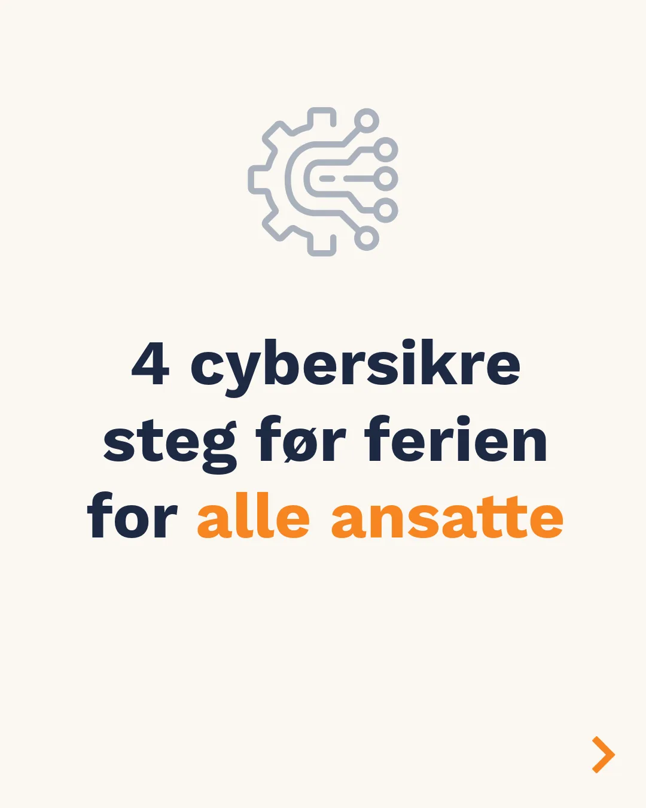

Garnes Data · Oslo
Din proaktive IT-konsulent.
Vi bygger lagdelt sikkerhet med endepunktsikring, e-postfiltrering, passordbehandler og automatisk backup — og sikrer Microsoft 365 med tofaktor og riktige tilganger.
IT-sikkerhetSkytjenesterSupport og driftIT-rådgivning og AI
- Lagdelt
- sikkerhet i flere nivåer
- WTH Secure
- Gold Partner
- Oslo
- 21 42 10 10
Det vi leverer.
Vi tar ansvar for at IT-en fungerer — og at den ikke blir et åpent vindu inn i virksomheten.
01
IT-sikkerhet
Endepunktsikring, e-postfiltrering, passordbehandler og automatisk backup.
02
Skytjenester
Microsoft 365 med tofaktor og riktige tilganger — satt opp for å holde.
03
IT-support og drift
Daglig drift og support, med proaktiv oppfølging i stedet for brannslukking.
04
IT-rådgiver og AI
Rådgivning om systemer og verktøy, og hjelp til å bruke AI fornuftig.
Lagdelt sikkerhet.
Sikkerhet er ikke ett produkt — det er flere lag som virker sammen. Vi starter med det som gir mest beskyttelse for pengene, og bygger videre derfra.
- 01EndepunkterBeskyttelse på maskinene, ikke bare i nettverket.
- 02E-post og passordFiltrering og passordbehandler som folk bruker.
- 03BackupAutomatisk backup, og vi tester at den faktisk lar seg gjenopprette.

Kunder vi jobber med.
Fra tannklinikk til arkitektkontor — virksomhetene er ulike, men behovet for stabil IT er det samme.


Har dere IT som bør gjennomgås?
Ring 21 42 10 10, eller send en henvendelse om sikkerhet, sky eller support.